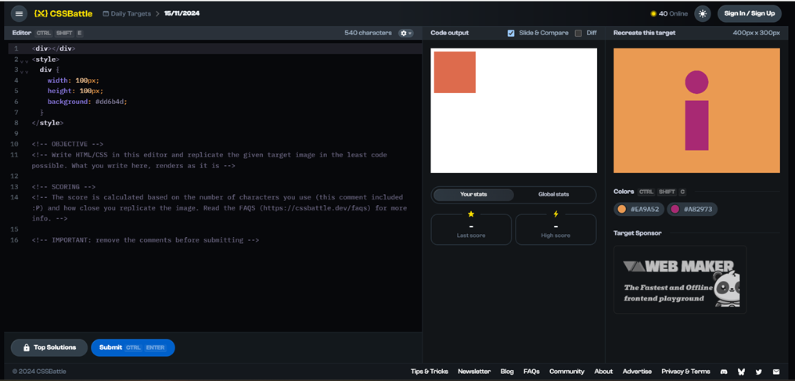
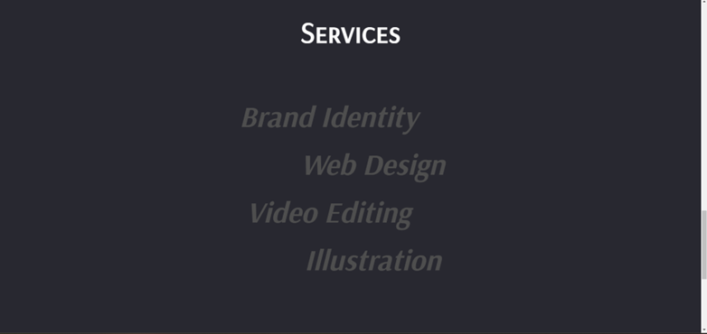
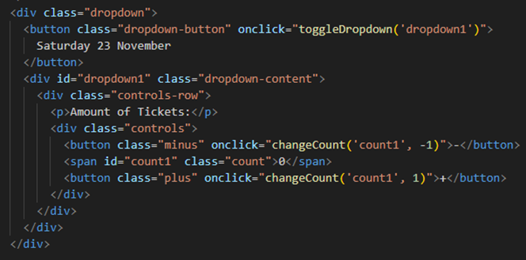

Development
You explore front-end development languages, you write code and document in a version control environment.
Inhoudsopgave
CSS challenges
CSSbattle.dev
Ik weet nog van vorig semester dat er een website was waar je met alleen gebruik van CSS een challenge doet. Hier kun je kiezen tussen daily challenges waarbij je tegen de rest van de spelers raced om wie de snelste is die dit kan namaken. Maar aangezien ik nog niet echt goed ben in HTML/CSS koos ik voor de normale challenges zonder tijdsdruk
De enige hulp die ik eigenlijk nodig had was de start. De manier zoals het nu is (en ook hoort) is door een vierkant 45 graden te draaien zodat het een ruit en vanuit daar 2 cirkels worden toegevoegd die samen het hart vormen.
Hierdoor heb ik wel geleerd dat je eigenlijk veel dingen zelf kan maken in plaats van een image toevoegen. Vaak is een image toevoegen wel makkelijker maar om te laten zien dat het zo ook kan is wel erg interessant.
Portfolio
Door deze code is mijn header gemaakt, de html hiervan is niet zo heel spannend en was snel geschreven, maar de CSS kant is een heel ander verhaal.
Om de vormen die ik heb gebruikt op de juiste positie te krijgen was eerst best een struggle aangezien ik het eerst zonder “Position Absolute” probeerde, maar dit lukte me maar niet dus ben ik uiteindelijk wel voor die optie gegaan.
Animaties met Keyframes
Om de animatie van de tekst te maken die van Hallo -> Hello -> Ciao -> Hallo gaat had ik wel wat hulp nodig. Hierbij had ik hulp van mijn broer gekregen aangezien deze transitie smooth wilde hebben en niet zo ineens switch naar de volgende. Hierbij heb ik wel geleerd dat je de @keyframes heel nauwkeurig kan splitsen, zolang je maar bij 100% uitkomt.
Animaties met Transform
Voor de services pagina wilde ik een animatie hebben dat als ik over de tekst hover, deze “licht” geeft door wit te worden. Dit is uiteindelijk ook gelukt door transform te gebruiken waarbij als je nu over de item heen hovered de color wordt aangepast naar wit (FFFFFFF) en een transitie van 0.3s zodat dit ook soepel is en niet instant wisselt.
Struggles met CSS
Ik loop nu nog wel vast op dit stuk waar ik eigenlijk deze symbooltjes achter en voor de woorden bij services wil hebben. Hier probeer ik nu zonder de position absolute ze goed te krijgen maar dit is nog niet gelukt.
Dit heb ik opgelost door de code in dezelfde div te zetten, deze stonden eerst apart in een class die ik met css op de juiste plek wilde zetten, maar door ze in dezelfde class te zetten als de tekst is dit een stuk makkelijker en Is dit nu opgelost.
Scroll Animaties met Javascript
Voor elk project heb ik een banner waar je op kan klikken die naar het project gaat, mijn idee was om deze groter te laten worden als je verder naar beneden scrolt. Ik had deze eerst statisch neergezet en daarna gekeken naar scrol animaties op YouTube.

https://www.youtube.com/watch?v=HIWWBHB3xHY
In deze video wordt heel duidelijk uitgelegd welke elementen je moet gebruik voor verschillende scrol animaties, ik heb hierbij gekozen voor de “grow” animatie die overeen komt met mijn originele idee.
Dit is de javascript code hiervan, ik had eerst wat moeite met de timing van wanneer de image groeit, maar toen kwam ik erachter dat ik geen threshold had ingesteld. Deze staat nu op 0.5 wat betekent dat als de bovenste 50% van de image in beeld is, de image gaat groeien. Als ik deze zou veranderen naar 0.7 zou het pas bij 70% beginnen etc.
Ook is er een “else” toegevoegd die de afbeelding "grow" weer laat krimpen als je verder naar beneden scrolt.
Development Project
https://git.fhict.nl/I489799/development-nasmakpm
Toen de development opdracht af was vrijdag 6 december heb ik deze code met de image alvast toegevoegd, de site zelf wordt nog online gezet dus ik heb deze nog niet direct gelinkt.
*ondertussen staat de website op mijn portfolio; Klik hier
De banner die ik gebruikte bij de vorige images hadden al een ronde border via photoshop, dus bij deze moest ik even opzoeken wat de border van de andere was en dat via CSS ook bij deze toevoegen.

Dit is de pagina die ik heb gemaakt, ik heb dit proces niet stap voor stap gedocumenteerd maar per pagina die ik af heb gemaakt. Hier ga ik nu doorheen lopen met dingen waar ik moeite mee had.
Dropdown met Javascript
De dropdown was ook iets wat ik niet zo makkelijk in elkaar had kunnen zetten. Ik wilde deze volledig functioneel hebben. Ik wilde dat de hoeveelheid tickets niet onder 0 kon gaan, en dat de informatie werd opgeslagen voor de volgende pagina, waar de informatie werd ingevuld, en daarna werd verzonden naar nasmak’s gmail account.
Ik maak hier gebruik van een javascript om beide het nummer te veranderen door op de plus of min te drukken, en ook om de data op te slaan.
Hier is de javascript voor de dropdown menu. Door bij “currentcount = math.max” 0 te zetten kan het getal niet onder 0 komen. Dit is ook nodig want je kan niet -1 kaartje bestellen. Onderaan wordt het aantal opgeslagen bij “saveTicketCount” hier kom ik later op terug bij de volgende pagina.
Form antwoorden naar email
Deze form pagina is ook niet heel bijzonder, maar wat wel cool is is dat deze pagina alle gegevens doorstuurt naar ticketsnasmak@gmail.com. Ik heb gebruik gemaakt van een website genaamd Formspree. Dit is een API die als de tussenpersoon werkt om de gegevens door te sturen naar een email adres.
dit is een voorbeeld van het resultaat wat naar de email van nasmak wordt gestuurd, zoals je ziet wordt alle informatie inclusief de ticket count die op een aparte pagina wordt ingevuld wordt opgeslagen en doorgestuurd.
Javascript challenges
oefening 1
“Write a Javascript program to check two numbers and return true of false if one of the numbers is 100 or if the sum of the two numbers is 100”
Hier is het eerste onderdeel waarbij hij controleert of de 2 nummers 100 zijn, hierbij heb ik ook 2 foute antwoorden gedaan zodat je ziet dat het ook “False” aangeeft als het niet klopt Om het optellen van de 2 getallen toe te voegen is het enige wat we missen de (A+B) code.
Hier zie je dat de onderste 2 ook true zijn 80+20 ook 100 is en 25+75 ook, hiermee is de opdracht dus voltooid.
oefening 2
“Write a Javascript program to get the current date. Expected output: day-month-year”
Ik gebruik bij deze opdracht de website https://playcode.io/empty_javascript omdat dit er beter uitziet, en de console live wordt geüpdatet.
Als output krijg ik nu een fout bij de maanden, in plaats van 14-1-2025 krijg ik 14-0-2025
Om dit op te lossen moet ik + 1 erbij zetten want er is geen maand “0” maar dit is wel de eerste waarde die wordt gebruikt hier.